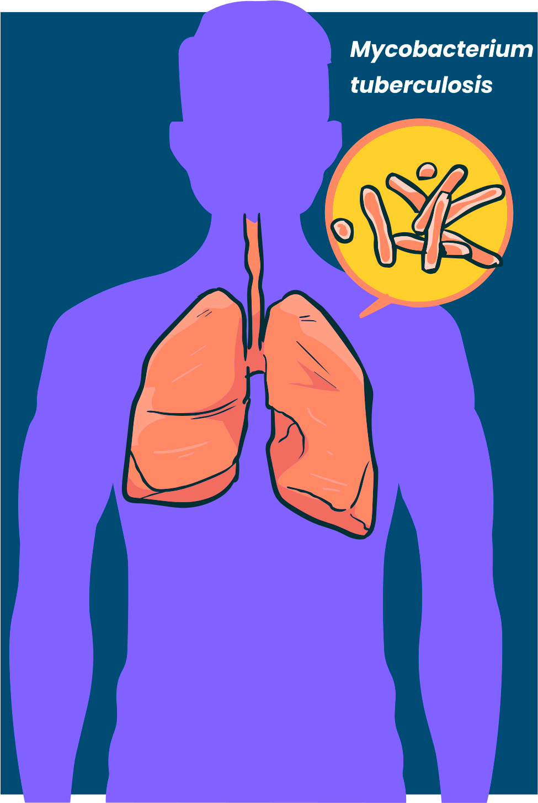

O que é tuberculose?
A tuberculose (TB) é classificada como uma doença bacteriana, seu agente causador é o Mycobacterium tuberculosis (M. tuberculosis), também conhecido como bacilo de Koch.
Segundo o “Relatório Global da Tuberculose”, disponibilizado pela Organização Mundial de Saúde (OMS), em 2019, a doença matou 1,2 milhão de pessoas e 10 milhões a adquiriram em todo o mundo. O Brasil, nesse ano, foi responsável por 4,5 mil óbitos.